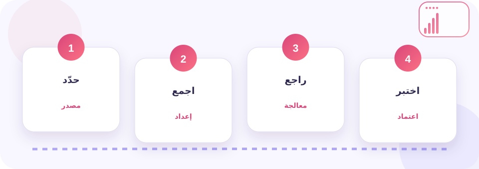
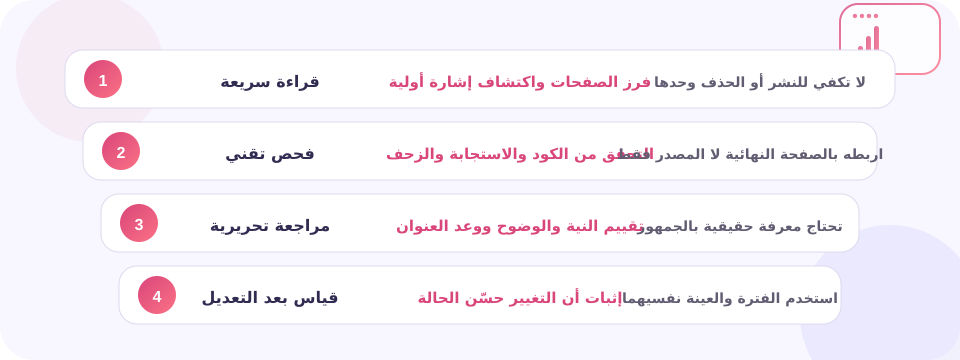
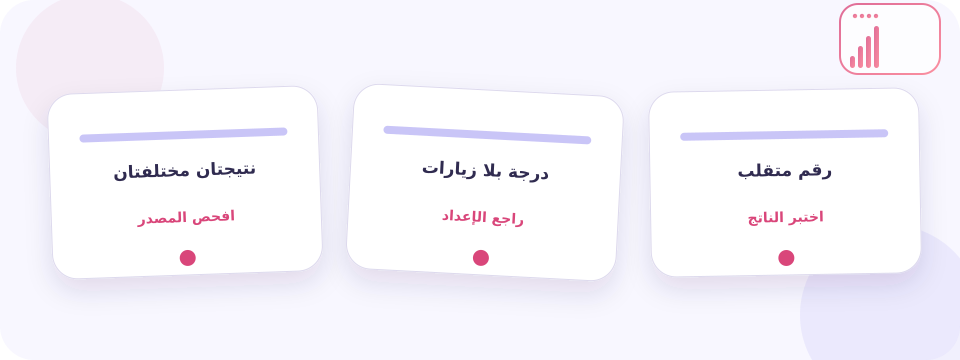

ما الذي تقيسه الأداة فعلًا؟
فحص الباك لينك المجاني أداة تساعد على جمع الروابط الخارجية التي تشير إلى نطاق أو صفحة وتحليل المصدر والوجهة ونص الرابط. تبدأ قيمتها الحقيقية عندما تستخدمها من أجل فهم ملف الروابط الخلفية واكتشاف فرص النمو والمخاطر والروابط المفقودة، لا عندما تنقل الرقم أو الكود كما ظهر.
سيشرح هذا الدليل كيف تجمع القراءة، وتفصل بين الملاحظة والحكم، ثم تحول الناتج إلى قائمة باك لينك قابلة للفرز حسب المصدر والصفحة والنص والحالة يمكن لفريق المحتوى أو التطوير مراجعته.
هناك حد واضح لما تستطيع الأداة إثباته: لا توجد أداة ترى كل روابط الويب، كما أن وجود الرابط لا يعني أنه مؤثر أو موصى به أو سبب مباشر في ترتيب الصفحة. لذلك لا تجعل أي درجة بديلًا عن فتح الصفحة، قراءة سياقها، ومقارنة التقرير ببيانات Search Console أو Analytics أو الخادم عندما تكون متاحة.
بنهاية الدليل ستعرف كيف تختبر حداثة الفهرس وتمييز الروابط الحية والمفقودة وخصائص rel، وتقرأ النتيجة ضمن هدف الصفحة، وتختار إصلاحًا واحدًا يمكن قياس أثره بدل إجراء تعديلات واسعة لا تستطيع تفسيرها لاحقًا.
في سياق فحص الباك لينك المجاني، احفظ نسخة من الصفحة أو الإعداد، وسجل تاريخ القياس ومصدره. لا تشتر روابط ولا تحذف نطاقات ولا تغير بنية الموقع اعتمادًا على درجة منفردة. ابدأ بعينة صغيرة ثم راقب الأثر.
كيف يتحول الرابط إلى تقرير؟
تعتمد الأداة على جمع الروابط الخارجية التي تشير إلى نطاق أو صفحة وتحليل المصدر والوجهة ونص الرابط. تجمع بيانات يمكن ملاحظتها من الرابط أو الصفحة أو فهرس خارجي، ثم تنظّمها في إشارات أو درجات أو قوائم. تختلف النتيجة باختلاف وقت الفحص ومصدر البيانات وطريقة تنفيذ JavaScript ومكان الطلب. لهذا يجب قراءة كل مقياس مع تعريفه، وليس افتراض أن الأرقام المتشابهة بين الأدوات تعني الشيء نفسه.
عند تطبيق ذلك على فحص الباك لينك المجاني، يبدأ تفسير التقرير من تقييم الرابط الخلفي من المصدر إلى الوجهة؛ لأن الرقم المنفرد لا يشرح نية الصفحة ولا سبب ظهور الإشارة ولا الخطوة التي تستحق الأولوية.
عمليًا مع فحص الباك لينك المجاني، عندما تصل إلى هذه النقطة يفيدك الفرق بين DA وPA وحدود مؤشرات السلطة في فصل التعريف التقني عن الانطباع، ثم ربطه بمصدر البيانات والصفحة التي أُخذ منها القياس.
قبل تغيير الموقع، استخدم تفسير Spam Score دون اعتباره عقوبة لفهم ما يمكن أن يستنتجه الفحص وما لا يستطيع إثباته، ودوّن السؤال الذي تريد الإجابة عنه.
اكتب السؤال قبل التشغيل: فهم ملف الروابط الخلفية واكتشاف فرص النمو والمخاطر والروابط المفقودة. استخدم حالة واقعية مثل تراجع صفحة مهمة بعد فقد روابط تحريرية كانت ترسل زيارات وإشارات اكتشاف. إذا لم تستطع تحديد حداثة الفهرس وتمييز الروابط الحية والمفقودة وخصائص rel فلا تتخذ قرارًا نهائيًا؛ اجمع هذه المعلومة أولًا أو صرّح بأن النتيجة استكشافية.
أربع خطوات للحصول على قراءة قابلة للعمل
جهّز رابطًا قانونيًا يعمل دون تسجيل دخول، وحدد هل تريد فحص صفحة واحدة أم نطاقًا كاملًا. الهدف هو فهم ملف الروابط الخلفية واكتشاف فرص النمو والمخاطر والروابط المفقودة. أغلق التغييرات المتزامنة قدر الإمكان، ثم اتبع المراحل الأربع وسجل كل نتيجة بدل الاعتماد على الذاكرة.

حدد الصفحة والسؤال
اكتب الرابط الذي ستفحصه وحدد السؤال بدقة: فهم ملف الروابط الخلفية واكتشاف فرص النمو والمخاطر والروابط المفقودة. ثبّت الجهاز والسوق والفترة عندما تؤثر في النتيجة، واحفظ لقطة أولية قبل أي تعديل حتى يصبح لديك خط أساس صالح للمقارنة.
اجمع القراءة مع سياقها
شغّل الأداة وسجل حداثة الفهرس وتمييز الروابط الحية والمفقودة وخصائص rel. لا تنسخ الدرجة النهائية وحدها؛ احتفظ بالإشارات الفرعية، وقت الفحص، الرابط النهائي وأي تحويل أو تحذير ظهر أثناء الجمع.
راجع الصفحة يدويًا
قارن التقرير بالمحتوى والكود وتجربة الجوال. اسأل هل الإشارة تشرح حالة حقيقية في سيناريو مثل: تراجع صفحة مهمة بعد فقد روابط تحريرية كانت ترسل زيارات وإشارات اكتشاف. إذا تعارض الرقم مع الواقع، افحص مصدر البيانات قبل تغيير الموقع.
نفذ تغييرًا قابلًا للقياس
اختر تعديلًا واحدًا عالي الأثر، ثم أعد القياس بالشروط نفسها. وثق النتيجة في صورة قائمة باك لينك قابلة للفرز حسب المصدر والصفحة والنص والحالة، ولا تعتمد التعديل إن حسّن رقمًا وأضعف وضوح الصفحة أو ثقة المستخدم.
عندما تحصل على قائمة باك لينك قابلة للفرز حسب المصدر والصفحة والنص والحالة، تحقق من الرابط النهائي ومصدر البيانات وأعد فتح العنصر الأكثر أهمية يدويًا. إن كانت الحالة تشبه تراجع صفحة مهمة بعد فقد روابط تحريرية كانت ترسل زيارات وإشارات اكتشاف فابدأ بإصلاح السبب الأقرب، ثم أعد القياس قبل تعميم التغيير.
مقارنة طرق القراءة والقرار
ولأن موضوعنا هو فحص الباك لينك المجاني، تنجح المراجعة عندما توزع المسؤولية بين الأداة والإنسان والبيانات المباشرة. الأداة سريعة في الجمع، والمراجع يفهم النية، والقياس بعد التعديل يختبر الفرضية. يوضح الجدول ما تكسبه من كل مسار وما يجب ألا تنسبه إليه.

| مسار المراجعة | متى يفيد؟ | ما الذي يجب التحقق منه؟ |
|---|---|---|
| قراءة سريعة | فرز الصفحات واكتشاف إشارة أولية | لا تكفي للنشر أو الحذف وحدها |
| فحص تقني | التحقق من الكود والاستجابة والزحف | اربطه بالصفحة النهائية لا المصدر فقط |
| مراجعة تحريرية | تقييم النية والوضوح ووعد العنوان | تحتاج معرفة حقيقية بالجمهور |
| قياس بعد التعديل | إثبات أن التغيير حسّن الحالة | استخدم الفترة والعينة نفسيهما |
في الحالة الخاصة بـفحص الباك لينك المجاني، لا تبحث عن صف فائز دائمًا. قد تبدأ بقراءة سريعة، تنتقل إلى فحص تقني، ثم تحتاج مراجعة تحريرية قبل القياس. معيارك هو هل أصبح القرار أوضح وأكثر قابلية للإعادة، وليس عدد التنبيهات التي اختفت.
مراجعة النتيجة داخل الصفحة
اختبر الأداة على صفحتين تعرفهما: واحدة سليمة وأخرى تحتوي مشكلة مقصودة غير خطرة. قارن طريقة عرض حداثة الفهرس وتمييز الروابط الحية والمفقودة وخصائص rel، وسجل هل يشرح التقرير سبب الإشارة أم يعرضها فقط. هذا الاختبار يكشف حدود الواجهة قبل استخدامها على موقع كبير.
لتحسين نتيجة فحص الباك لينك المجاني، وفي مرحلة الاعتماد، يساعد فهم تحسين محركات البحث كمنظومة متكاملة على مراجعة النتيجة من زاوية أخرى حتى لا يتحول التقرير إلى قائمة أرقام بلا قرار تحريري أو تقني.
طبّق سيناريو واقعيًا: تراجع صفحة مهمة بعد فقد روابط تحريرية كانت ترسل زيارات وإشارات اكتشاف. اقرأ الرابط والعنوان والمحتوى والاستجابة كما يراها المستخدم، ثم قارن ذلك بما تقوله الأداة. إذا احتجت إلى تخمين مصدر الرقم، ارجع إلى التوثيق ولا تبنِ قرارًا مكلفًا على افتراض.
- الرابط النهائي مثبت
- مصدر البيانات معروف
- نية الصفحة موثقة
- القياس قبل وبعد محفوظ
أثناء مراجعة فحص الباك لينك المجاني، اكتب في نهاية المراجعة: ما الذي قيس، وما المصدر، وما الفترة، وما الذي لم يُقَس. ثم حدد إصلاحًا ومالكًا وموعد إعادة فحص. هذه الشفافية جزء من E-E-A-T لأنها تمنع عرض التقدير على أنه حقيقة قطعية.
مشكلات شائعة وحلولها
الأخطاء الأكثر إزعاجًا في أدوات SEO ليست دائمًا أعطالًا برمجية؛ كثير منها اختلاف تعريف أو عينة أو توقيت. ابدأ بـ حداثة الفهرس وتمييز الروابط الحية والمفقودة وخصائص rel، ثم افصل مشكلة الوصول عن مشكلة المحتوى وعن اختلاف الفهرس الخارجي.

تختلف النتيجة بين أداتين، أيهما الصحيح؟
قارن تعريف المؤشر ومصدر البيانات وتاريخ التحديث. لا توجد أداة ترى كل روابط الويب، كما أن وجود الرابط لا يعني أنه مؤثر أو موصى به أو سبب مباشر في ترتيب الصفحة. استخدم الاتجاه المشترك، ثم ارجع إلى بياناتك المباشرة أو الصفحة نفسها عندما يكون القرار مهمًا.
الدرجة جيدة لكن الصفحة لا تحصل على زيارات
في سياق فحص الباك لينك المجاني، راجع نية البحث والفهرسة والطلب الحقيقي ومتوسط الموضع ومعدل النقر. الدرجة الفنية الجيدة تزيل عائقًا، لكنها لا تخلق طلبًا ولا تجعل الإجابة أفضل تلقائيًا.
أعدت الفحص فتغير الرقم دون تعديل الموقع
عند تطبيق ذلك على فحص الباك لينك المجاني، قد تتغير الشبكة أو الفهرس أو العينة أو الخادم أو بيانات المنافسين. كرر القياس في وقتين، وثبّت الرابط والجهاز والمنطقة، ولا تتعامل مع فرق صغير بوصفه اتجاهًا مؤكدًا.
ظهر تحذير لا أعرف كيف أصلحه
افتح الدليل المرتبط بالإشارة وحدد العنصر والصفحة المتأثرة. ابدأ بـ حداثة الفهرس وتمييز الروابط الحية والمفقودة وخصائص rel، ثم اختبر إصلاحًا على صفحة واحدة قبل تطبيقه جماعيًا.
عمليًا مع فحص الباك لينك المجاني، إذا استمر التناقض، احفظ الرابط والتوقيت وصورة التقرير والبيئة المستخدمة. اختبر صفحة بسيطة تعمل بلا JavaScript، ثم صفحة الإنتاج. لا تشارك بيانات حساسة أو مفاتيح وصول عند طلب الدعم.
سير عمل SEO قابل للتكرار
اجعل كل فحص تذكرة عمل صغيرة: سؤال، خط أساس، دليل، فرضية، تعديل واحد، ثم قياس جديد. بهذه الطريقة تخدم الأداة فهم ملف الروابط الخلفية واكتشاف فرص النمو والمخاطر والروابط المفقودة وتنتج قائمة باك لينك قابلة للفرز حسب المصدر والصفحة والنص والحالة بدل أن تضيف تقريرًا آخر لا يقرأه أحد.
رتب بحسب الأثر والثقة
ضع النتائج في مصفوفة بسيطة: أثر محتمل مرتفع أو متوسط أو منخفض، وثقة قوية أو تحتاج تحققًا. ابدأ بما يدعم فهم ملف الروابط الخلفية واكتشاف فرص النمو والمخاطر والروابط المفقودة ويملك دليلًا واضحًا على الصفحة.
حوّل التحذير إلى تجربة
اكتب الفرضية بهذه الصيغة: إذا أصلحنا الإشارة المحددة فسيتحسن سلوك قابل للقياس. طبّق التغيير على عينة، وراقب قائمة باك لينك قابلة للفرز حسب المصدر والصفحة والنص والحالة بدل الاكتفاء باختفاء لون أحمر من التقرير.
أغلق المهمة بمراجعة بشرية
اختبر النتيجة على الهاتف وسطح المكتب، وافتح الرابط كمستخدم جديد. دوّن القيد المهم: لا توجد أداة ترى كل روابط الويب، كما أن وجود الرابط لا يعني أنه مؤثر أو موصى به أو سبب مباشر في ترتيب الصفحة. بهذا تظل التوصية صادقة وقابلة للنقل إلى عضو آخر في الفريق.
أُعد هذا الدليل بمراجعة وثائق Google وRFC وWHATWG ومصادر القياس المتخصصة المناسبة للموضوع. فُصلت المؤشرات التابعة لجهات خارجية عن عوامل الترتيب الرسمية، وصُرّح بأن لا توجد أداة ترى كل روابط الويب، كما أن وجود الرابط لا يعني أنه مؤثر أو موصى به أو سبب مباشر في ترتيب الصفحة. تمت المراجعة التحريرية والتقنية في 23 يوليو 2026.
الأسئلة الشائعة عن فحص الباك لينك المجاني (Backlink Checker)
هل فحص الباك لينك المجاني يرفع ترتيب الموقع مباشرة؟
في الحالة الخاصة بـفحص الباك لينك المجاني، لا. الأداة تكشف إشارات أو تنشئ مخرجًا يساعد العمل، أما الترتيب فيتأثر بمدى فائدة الصفحة وملاءمتها للبحث وقابليتها للزحف وتجربة المستخدم ومنافسة النتائج.
هل يمكن الاعتماد على الدرجة الإجمالية وحدها؟
لا، لأن الدرجة تجمع عناصر مختلفة بأوزان يحددها مزود الأداة. اقرأ العناصر التي صنعتها واربطها بهدفك وهو فهم ملف الروابط الخلفية واكتشاف فرص النمو والمخاطر والروابط المفقودة.
كم مرة ينبغي إعادة الفحص؟
لتحسين نتيجة فحص الباك لينك المجاني، أعده بعد تغيير جوهري أو نشر مجموعة صفحات أو ملاحظة تراجع، ثم أنشئ مراجعة دورية للصفحات المهمة. لا تعِد التشغيل يوميًا إذا لم يتغير الموقع أو مصدر البيانات.
هل أبدأ بالمحتوى أم المشكلة التقنية؟
ابدأ بالعائق الذي يمنع الوصول أو الفهرسة إن وُجد. بعد ذلك أصلح توافق النية والعنوان والمحتوى، ثم حسّن الأداء والروابط بحسب الأثر الفعلي.
كيف أعرف أن التحسين نجح؟
قارن قبل وبعد بالشروط نفسها، وتحقق من قائمة باك لينك قابلة للفرز حسب المصدر والصفحة والنص والحالة. النجاح لا يعني ارتفاع رقم واحد فقط، بل زوال المشكلة دون خلق أثر جانبي على المستخدم أو الزحف.
جرّب فحص الباك لينك المجاني بخط أساس واضح
اختر صفحة تعرف هدفها، احفظ القراءة الحالية، ثم شغّل الأداة ودوّن حداثة الفهرس وتمييز الروابط الحية والمفقودة وخصائص rel. نفّذ تعديلًا واحدًا وأعد الفحص بالشروط نفسها حتى ترى أثرًا يمكن تفسيره.
استخدام فحص الباك لينك المجاني